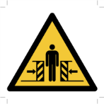
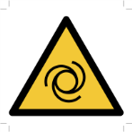

Lockout Tagout Tryout
Purpose and Application
Purpose
To define a work instruction for the proper Isolation and Lockout Tagout Tryout of energy isolating devices, switches, or sources whenever maintenance or servicing is done on machines or equipment, in accordance with local regulatory requirements. This work instruction is used to ensure that the machine or equipment being worked on is stopped and isolated from all potentially hazardous energy sources, locked and tagged out before employees perform any servicing, modifications, or maintenance where release of stored energy could cause injury.
Application
This work instruction applies to all work operations where employees must deal with Lockout Tagout Tryout situations as part of their job duties. Trouble shooting which requires energized sources is permitted by authorized employees but proper Lockout Tagout Tryout procedures must be utilized upon working on, modifying, or servicing any machine or equipment.
This work instruction applies to a company authorized employee who is trained to implement a Lockout Tagout Tryout procedure on machines or equipment to perform servicing or maintenance. The authorized employee knows and understands the types, magnitudes, and hazards of energy sources they work around or with. The authorized employee has been properly trained to Lockout Tagout Tryout and tryout all equipment and is permitted to troubleshoot.
Safety
|
Danger |
Electricity |
Entrapment |
Optical |
Falling |
Bump Hazard |
Crush Body |
Counter-Rotate |
Crush Hand |
Hot Surface |
|
Compressed Air |
Auto-Start |
Steam |
Sharp |
Flying Debris |


Instructions
- Before starting the work instruction activity, perform the following steps:
- Do not begin these tasks without confirmation that personnel directly involved have completed the required training associated with the work instruction activity and have reviewed this document.
- Gather necessary tools and equipment as identified below in the Equipment Section.
- Wear and use additional Personal Protective Equipment (PPE) and safety equipment required for this specific work instruction.
- Obey all applicable safety requirements and procedures.
- Notify appropriate personnel of the activity and estimated time needed to complete the tasks.
- Clearly identify, mark off, and secure the designated area defined by the work instruction activity.
- For proper Lockout Tagout, perform the following steps:
- Determine which machine will be Isolated, Locked and Tagged out.
- Review the machine profile for the machine that will be Isolated, Locked and
Tagged out.

-
Identify
the locations of each
main
energy feed
location for the types of energy to be controlled:
- Main, electrical
- Main, pneumatic
- Main, natural gas
- Main, hydraulic
- Main, mechanical
- Main, other
- Depress all stop buttons or normal equipment stop controls on the machine or equipment.
-
Identify
and
isolate
all
local
energy
feed locations for the types of energy to be controlled:
- Local, electrical
- Local, pneumatic
- Local, natural gas
- Local, hydraulic
- Local, mechanical
- Local, other
- Place locks and tags on switches or other energy feed sources in the “SAFE” or “OFF” position.
- Release any residual or stored energy in the machine or equipment according to the completed machine profile form.
- Isolate bleed valve in open position to prevent re-accumulation of energy.
- To perform energy check, perform the following steps:
- Perform a mechanical energy check by operating the “START”
button or the normal operating controls or check with a voltmeter to ensure the
machine or equipment will not operate.
- Return all operating controls to the “OFF” position after the test.
- Perform an electrical energy check for any work inside the cabinets by utilizing a “live-dead-live” verifier test to ensure all energy has been isolated before proceeding with work.
- Until an electrical circuit or parts are tested and found absent of voltage, they must be presumed to be energized.
- Perform a mechanical energy check by operating the “START”
button or the normal operating controls or check with a voltmeter to ensure the
machine or equipment will not operate.
- Upon completion of tasks, perform the following steps:
- Replace protective guarding and close safety interlock gates.
- Confirm the designated work area is clear and communicate to personnel the intent to restart energy.
- After the designated work area is confirmed clear and personnel are aware of the pending restart, verify energy is active by depressing operation controls.
- Remove signs and markings from the designated work area.
- Perform basic housekeeping duties. Clean up the work space, tools and equipment. Dispose of trash. Put tools and equipment in assigned area.
- Notify appropriate personnel that the work instruction activity has been completed.
- Record and report findings and results.
- Follow appropriate instructions for notification of findings and results relating to specifications, targets and/or reaction limits.
Required Training
Before performing this work instruction, applicable personnel must be trained by an authorized trainer on the required training contents listed in this document.
Equipment
Mandatory Equipment
Locks
Tags (with means of attachment)
Optional or Recommended Equipment
Chains
Wedges
Key Blocks
Adapter pins
Self-locking fasteners
Voltmeter
Machine Block
Approval
|
Region |
Representative |
|---|---|
|
Asia Pacific |
Steve Bourke |
|
Europe |
Tim Neal |
|
Latin America |
Isabela Malpighi |
|
North America |
Ken Smigielski |
|
Global Operations |
Jim Joyce, V P |
Revision History
| 2015-12-30 |
Approved by Jim Joyce, V P Original Issue |